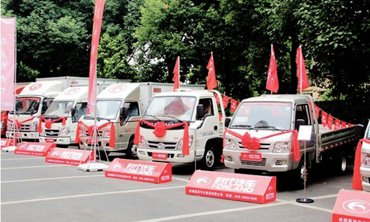
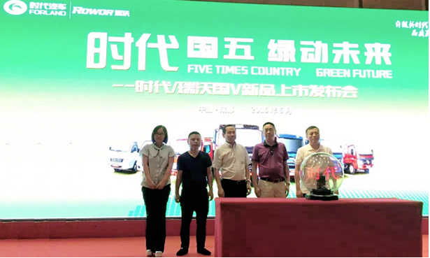
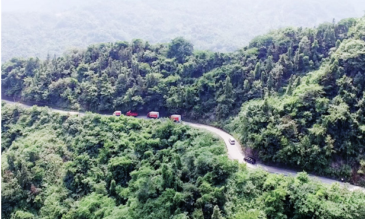
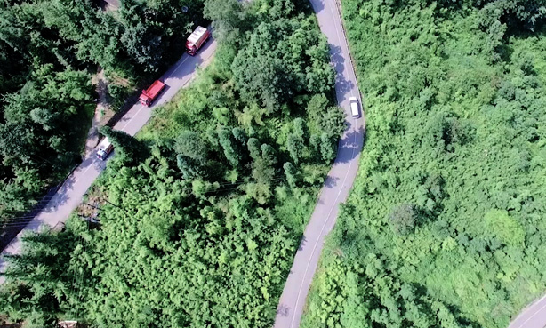
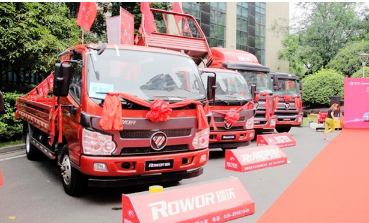
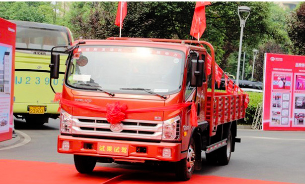
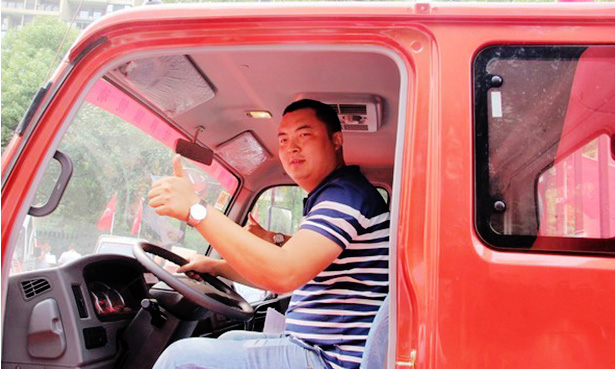
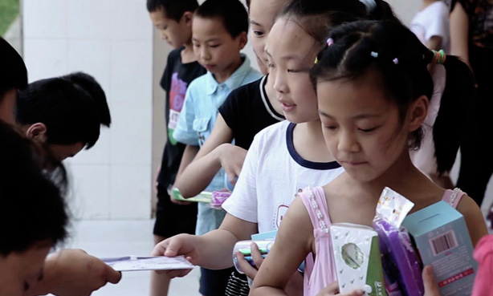
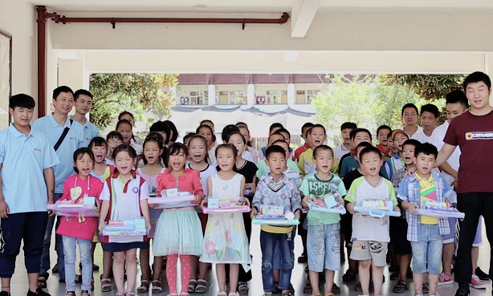

作者：暂无 出处：暂无
2016年6月21日，以“升级新时代 品质赢天下”为主题的2016福田时代/瑞沃品质体验之旅在四川成都隆重举行，来自四川省川联商会、物流协会、电商行业近200余名代表共赴现场，共同探讨现代物流行业发展方向，现场实现用户购车33辆。
美丽的天府之国成都作为全国现代物流创新发展试点城市，积极发展城市集中配送、共同配送等先进模式并创新物流管理体制机制，同时打造以门户型国际航空枢纽、开放型国际铁路枢纽、立体型口岸服务体系为支撑的国际物流枢纽。
本次福田时代/瑞沃品质体验之旅选择天府之国成都作为活动地点，正是看中成都现代物流发展良好的体制机制、完善的制度法规和建立健全的政策体系，福田时代有义务、有能力推动成都物流产业的发展和物流效率的提升，最大限度释放市场主体活力，打造城市物流发展的良好生态环境。
在这次活动中，福田时代旗下的成熟物流产品时代驭菱、小卡之星、康瑞轻卡、瑞沃中卡、福田骁运等产品悉数亮相，多产品结构布局为当地的物流运输带来了最全面的物流运输解决方案。据小编了解到，驭菱、小卡之星、福田骁运以及康瑞等车型在四川市场有着不错的销量，福田骁运在城郊地区更是爆发性的增长，尤其是栏板带有自卸的功能，一车多用更是让用户节省不少费用，而康瑞系列同样受到成都用户的喜爱，在城际中短途市场一直保持不错的销量。
 确实如此，从活动现场用户的高涨人气也可见对时代业务产品的喜爱。为了让用户对产品的品质有更加深刻的了解，在活动开始之前，福田时代特携旗下产品挑战了四川赫赫有名的213国道都江堰至汶川映秀段，这段路是我国著名的“十大死亡公路”之一。路段全长33公里，崎岖蜿蜒的山路依然阻挡不了时代、瑞沃进发的脚步，最终成功挑战了“挂壁公路”。
不仅如此，随着国家对于排放要求的不断升级，轻卡的国四、国五已经成为市场的发展，而福田时代产品早已做好成都地区升级国五的准备，目前产品已经在上海、北京等地实现全面销售，在此次品质体验现场，福田时代还带来了最新的国五产品！
 活动专门设置了试乘试驾环节，对于用户来说只有自己亲身操作体验过后才能评价出一个车的好坏，多名用户在体验了康瑞产品的加速、转弯、刹车等一些列动作之后，给出了不错的评价，更是称赞了气刹的制动效果。
 为用户提供最优质的产品，对于福田时代来说只是第一步，为用户提供贴心的服务和关爱，才是发展的长久之道。一直以来，福田时代都把“关爱社会，为社会做出企业最大贡献”作为企业主旨，在这次活动中，福田时代也将关爱带到了汶川、映秀的孩子们，以助学的形式带去了时代、瑞沃的祝福和问候。
福田时代/瑞沃品质体验之旅成都站的成功开启，预示着时代业务系列国五产品全部升级准备就绪，助力未来现代物流行业的绿色发展，开启城市现代物流运输品质升级的新篇章。